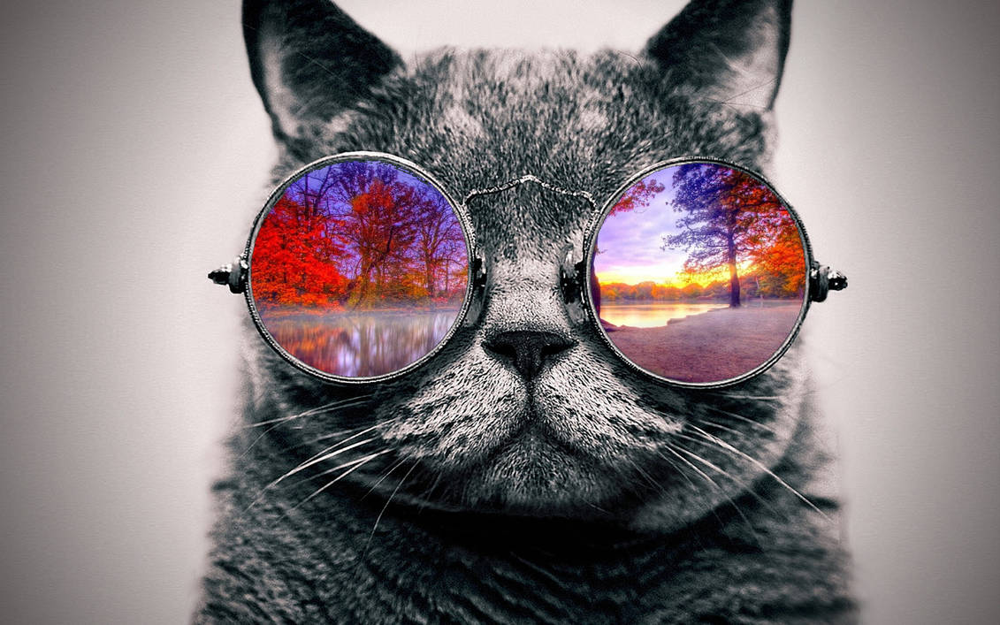

Contact Us
As a (Pursuit) full stack web developer with an entrepreneurial mindset, I'm passionate about building
innovative web applications that solve real-world problems.
With experience in both front-end and
back-end
development, I'm skilled in creating dynamic and responsive user interfaces, optimizing website
performance,
and building robust databases.
My entrepreneurial spirit drives me to not only create functional web
applications but also to find creative solutions to problems, develop business strategies, and explore
new
opportunities for growth.
Whether it's working on personal projects or collaborating with a team, I'm
always
eager to learn and apply new technologies and best practices. Let's connect and discuss how we can build
something amazing together!
